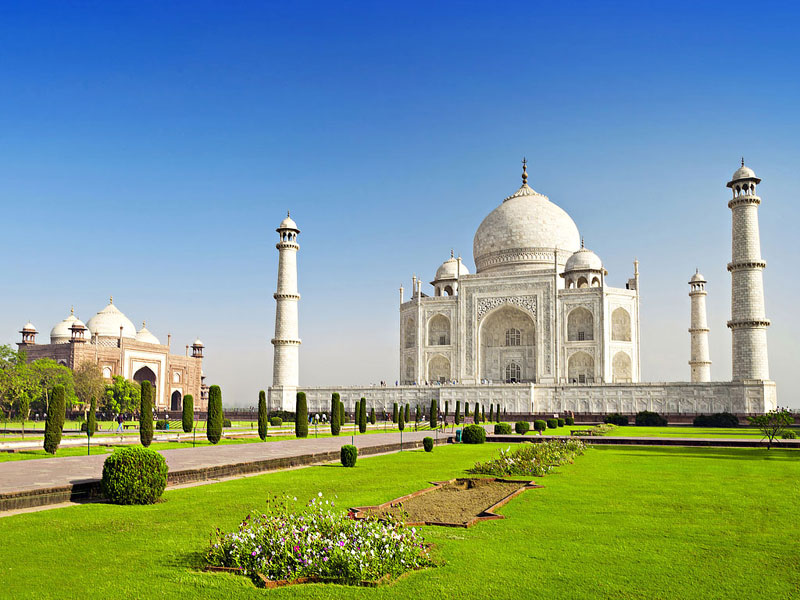
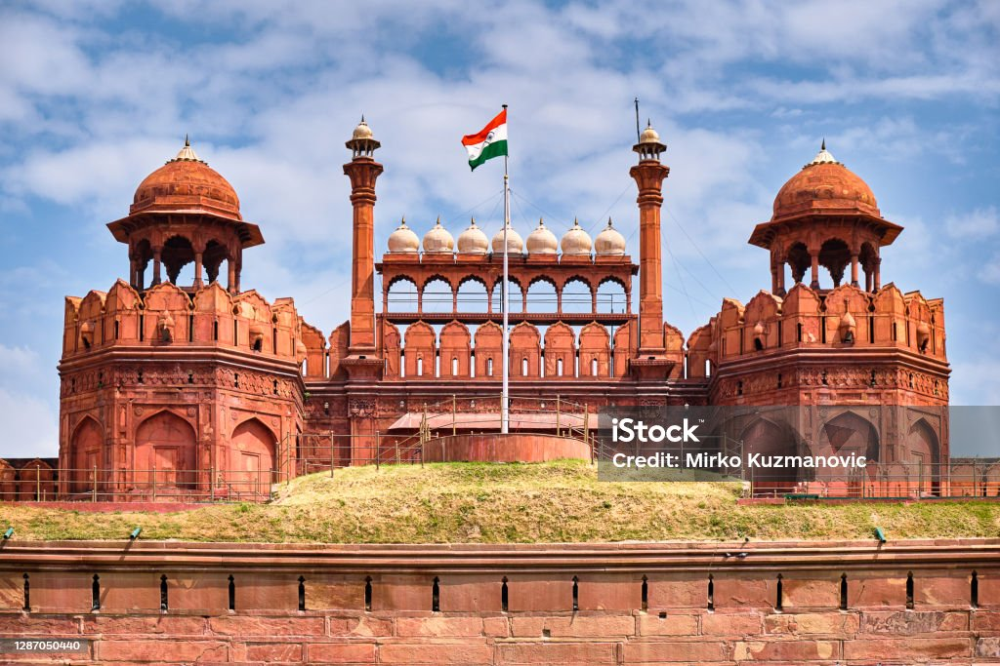
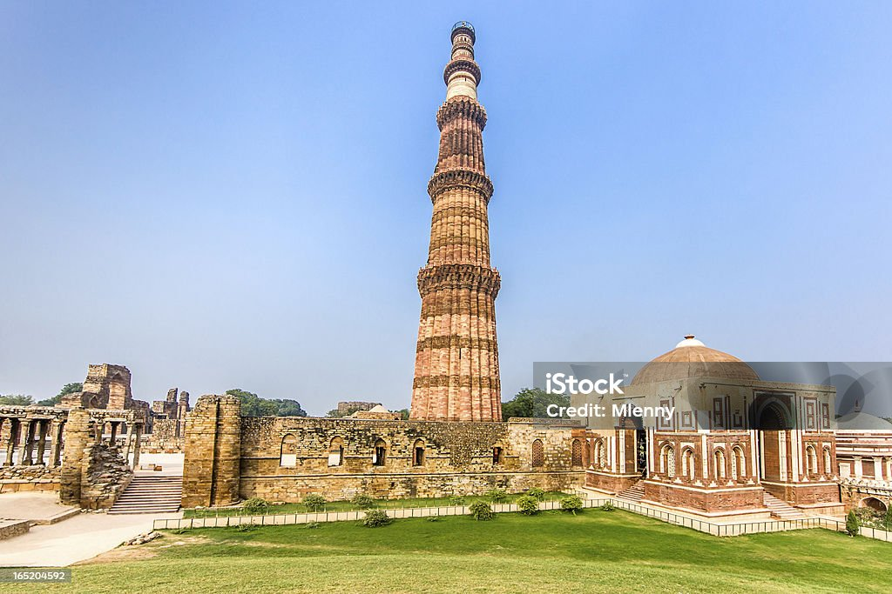
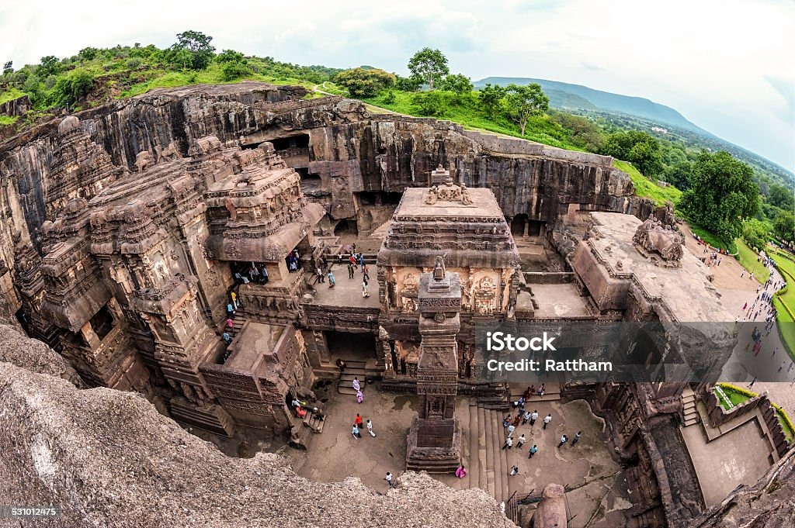
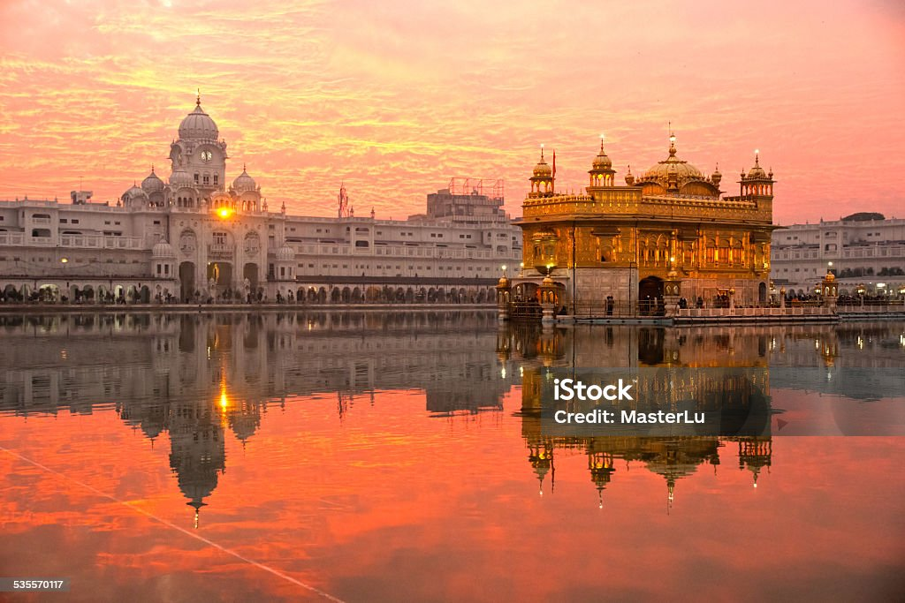
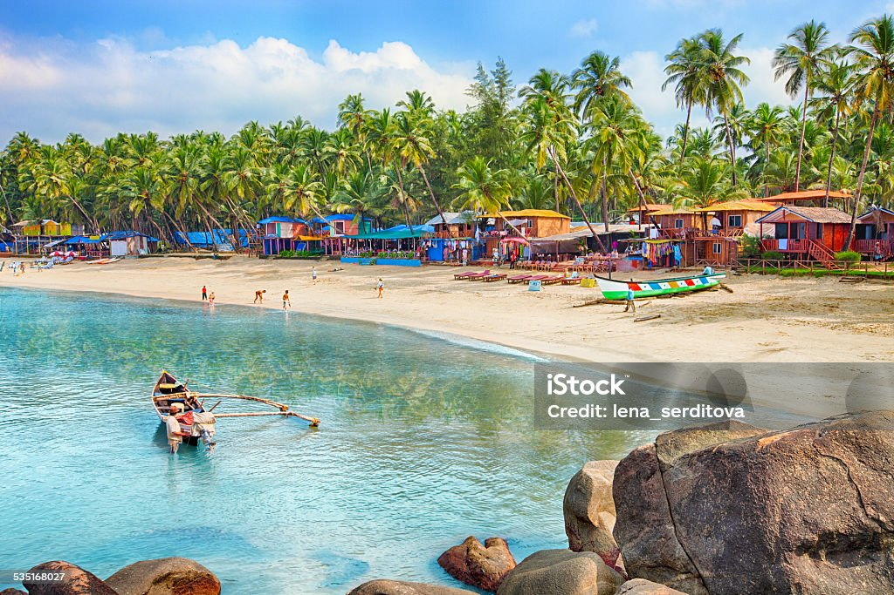

1. TAJMAHAL :
This iconic mausoleum in Agra is a UNESCO World Heritage site and a globally recognized symbol of love.
Its stunning white marble architecture is a must see.
- Built by Mughal Emperor Shah Jahan as a mausoleum for his wife Mumtaz
- In 2007, it was declared a winner of the New 7 Wonders of the World initiative.
- Taj Mahal is a major tourist destination, attracting millions of visitors annually
- symbol of India's rich cultural heritage and the artistic and architectural achievements of the Mughal era.

click here for info
2. RED FORT :
Also located in Agra, this historical fort was a significant residence of Mughal emperors.
It offers a glimpse into the grandeur of Mughal architecture and history.
- The Prime Minister of India hoists the national flag there every Independence Day.
- It's known for its red sandstone walls, intricate architecture
- historical significance as a symbol of Mughal power and Indian independence.
- fort's design is a fusion of Persian, Timurid, and Indian architectural styles.

click here for info
3. QUTUB MINAR:
This towering minaret in Delhi is also a UNESCO World Heritage site and the tallest minaret in India.
Its intricate carvings and historical significance make it a popular attraction.
- It was commissioned by Qutb-ud-din Aibak in the 12th century and completed by his successor Iltutmish, symbolizing the victory of the Delhi Sultanate
- Qutub Minar stands as the tallest brick minaret in the world, reaching a height of 72.5 meters.
- The minaret features five stories, each encircled by a projecting balcony, with intricate carvings and inscriptions from the Quran.
- The complex reflects a fascinating fusion of architectural styles and serves as a testament to India's rich cultural heritage and history,
attracting thousands of tourists each year.

click here for info
4. ELLORA CAVES:
A UNESCO World Heritage site in Maharashtra, the Ellora Caves are renowned for their intricate rock-cut architecture,
showcasing Buddhist, Hindu, and Jain cave temples.
- they are located in the Charanandri hills near Aurangabad, Maharashtra.
- Key features include the Kailasa Temple (Cave 16), a monolithic rock-cut temple, and the harmonious coexistence of different religious structures within the same complex.
- The Ellora Caves were recognized as a UNESCO World Heritage Site in 1983, acknowledging their global significance and the need for their preservation.
- They demonstrate the unique technique of "architecture in the negative," created by removing rock from the cliff face rather than stacking stones.

click here for info
5. GOLDEN TEMPLE:
Located in Amritsar, the Golden Temple, also known as Sri Harmandir Sahib, is the holiest shrine in Sikhism.
Its stunning architecture and spiritual ambiance attract visitors of all faiths.
- It is one of the oldest Hindu temples in Sikkim, built on land donated by the former Chogyal of Sikkim in 1935
- The "Golden Temple" in the context of Sikkim refers to the Thakurbari Temple, a Hindu temple located in Gangtok, the capital of Sikkim.
- It also houses a collection of Sikh weaponry and antiquities
- Sikkim is known for its diverse religious landscape, with Buddhism and Hinduism being prominent.

click here for info
6. GOA:
Located on the western coast of India, Goa is famous for its beautiful beaches, vibrant nightlife,
and unique blend of Indian and Portuguese influences.
- It offers a range of activities like watersports, exploring historical churches, and enjoying the relaxed "susegad" lifestyle.
- Nightlife: Goa is famous for its vibrant nightlife, featuring beach shacks, bars, and nightclubs that come alive after sunset.
- Goa offers a diverse shopping experience, from bustling markets selling local crafts and spices to chic boutiques with trendy clothing and accessories.
- Goa's rich history as a former Portuguese colony is reflected in its architecture, cuisine, and cultural traditions. Visitors can explore historical sites like churches and forts, and experience the unique Indo-Portuguese fusion in its art and cuisine.

click here for info